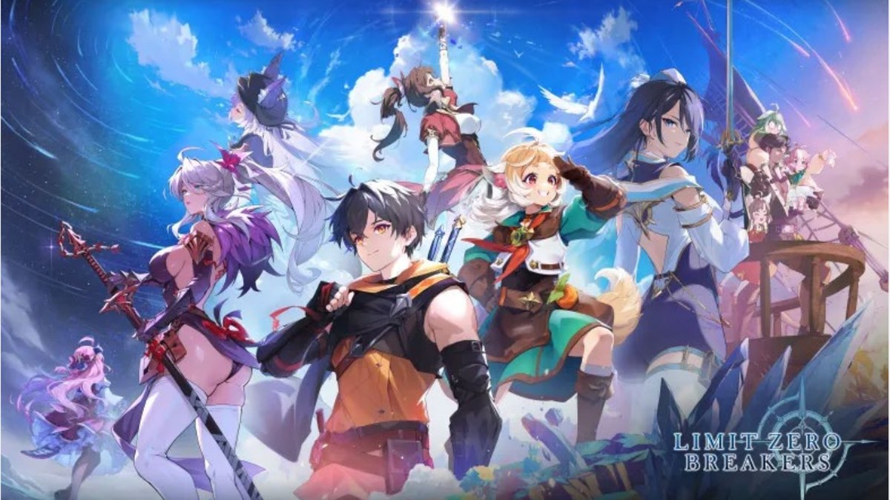
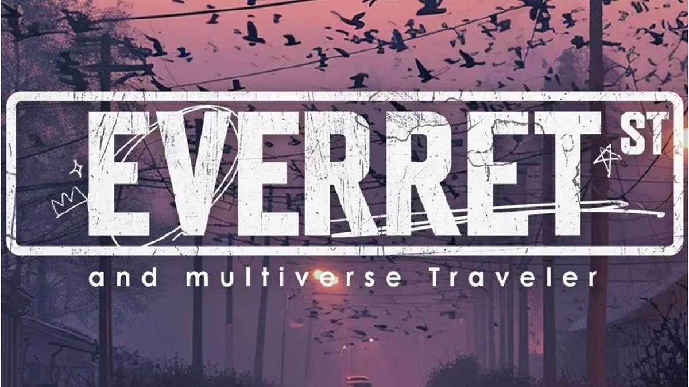
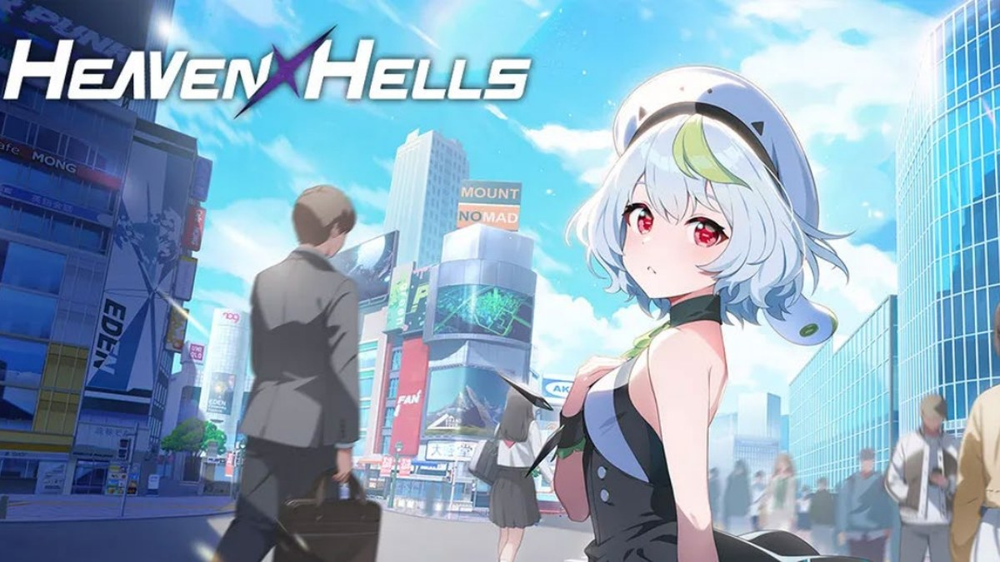
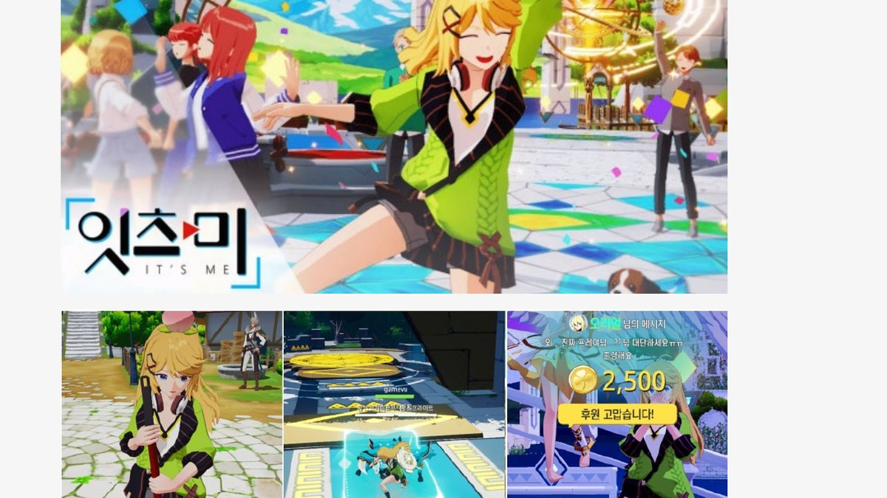
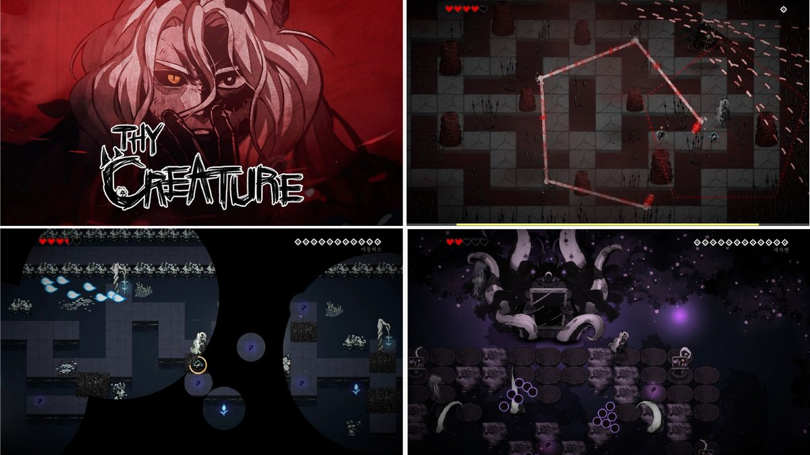
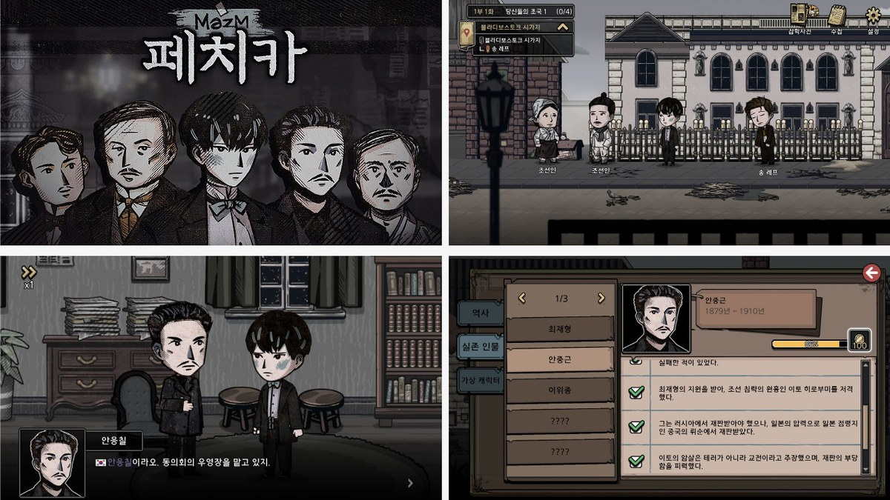
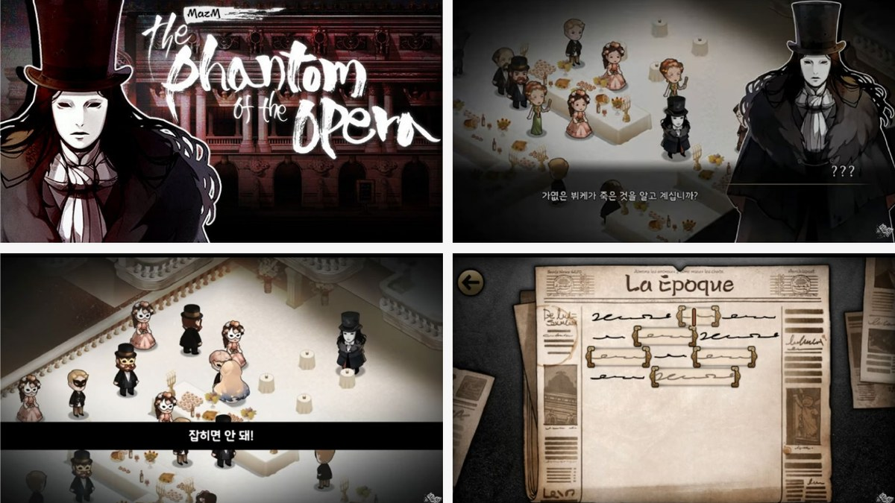

방향성 먼저 정리
기능을 바로 나열하기보다 목표 경험, 전투 톤, 플레이어가 느껴야 할 피드백을 먼저 정의합니다.
About
저는 전투의 손맛, 성장 동기, 스테이지 흐름처럼 플레이어가 직접 체감하는 경험을 기획 문서와 업무 단위로 번역하는 기획자입니다. 방향성을 먼저 정의하고, 기능 범위와 우선순위를 정리한 뒤, 테스트와 피드백을 통해 결과물을 조정하는 방식으로 일합니다.
특히 대규모 팀에서는 기획자의 역할이 아이디어 제안에 머무르지 않는다고 생각합니다. 목표를 문서화하고, 파트 간 협업 기준을 만들고, 일정과 검수 단위를 관리해 결과물이 같은 방향으로 완성되도록 조율하는 것이 중요합니다.
Work Style
기능을 바로 나열하기보다 목표 경험, 전투 톤, 플레이어가 느껴야 할 피드백을 먼저 정의합니다.
기획서를 설명 자료가 아니라 파트 간 합의 기준으로 작성합니다. 개발, 아트, 레벨, 전투 파트가 같은 기준으로 판단할 수 있게 만듭니다.
큰 목표를 작업 단계, 산출물, 검수 포인트로 나눠 일정과 피드백이 흐트러지지 않도록 관리합니다.
Skills
Career
기준, 빅게임 스튜디오 재직 중
브레이커스 / 전투 파트 파트장
에버렛 / 레벨 파트 파트장
잇츠미, 헤븐 헬즈 / 시스템, 콘텐츠, 전투 기획
오페라의 유령, 페치카, Thy Creature / 시스템, BM, 전투, 레벨 기획
초기 상용 프로젝트 / 시스템 기획, 레벨 디자인
Featured Projects

120명 규모의 대형 개발 조직에서 전투 파트 파트장으로 참여했습니다. 전투 방향성을 기준으로 전투 아키타입과 기반 시스템, 캐릭터/몬스터, 전투 콘텐츠 문서 작성 및 파트 일정 조율을 담당했습니다.

레벨 파트 파트장으로 7명의 레벨 디자이너를 조직하고, 1.5km x 1.5km 규모 월드의 컨셉과 지역별 플레이 경험, 레벨 시스템 및 배치 기준을 설계했습니다.


국내 라이브 서비스 단계에 참여하여 랭킹/경쟁 콘텐츠와 UX 개선 문서를 담당했습니다. 출시 후 운영에 필요한 콘텐츠 구조와 화면 흐름을 정리했습니다.



Design Documents
브레이커스 전투 개선 방향을 요약해 문제 인식, 개선 목표, 핵심 변경 사항을 빠르게 확인할 수 있도록 정리한 문서입니다.
문서 보기전투의 핵심 재미와 캐릭터, 무기, 스킬 설계 방향을 정리한 문서입니다. 이후 전투 시스템과 콘텐츠 문서의 상위 기준으로 활용했습니다.
문서 보기브레이커스의 성장 축과 전투 콘텐츠 확장 방향을 정리한 문서입니다. 캐릭터, 장비, 시스템 성장이 같은 기준으로 이어지도록 방향성을 잡았습니다.
문서 보기브레이커스에서 발생하는 피해, 회복, 성장형 수치 계산 기준을 정리한 문서입니다. 공식과 적용 범위를 정의해 전투 밸런싱의 기준을 마련했습니다.
문서 보기전투 중 원소 스킬을 교체하고 사용하는 규칙을 정리한 문서입니다. 발동 조건, 적용 대상, 전투 흐름 안에서의 역할을 기준화했습니다.
문서 보기무기 장착, 효과, 성장, 전투 영향 범위를 정리한 시스템 문서입니다. 캐릭터별 무기 효과가 같은 규칙 안에서 확장될 수 있도록 기준을 잡았습니다.
문서 보기버프와 디버프의 적용 규칙, 중첩, 지속 시간, 수치 계산 기준을 정리한 문서입니다. 전투 효과가 일관된 방식으로 동작하도록 공통 규칙을 마련했습니다.
문서 보기전투 중 타격감, 시야 확보, 타겟 인지를 위한 카메라 규칙을 정리한 문서입니다. 전투 상황별 시점 전환과 연출 기준을 정의했습니다.
문서 보기기본 조작, 추적, 거리, 각도, 상태별 전환 기준을 정리한 카메라 시스템 문서입니다. 전투 외 상황까지 포함해 일관된 화면 경험을 설계했습니다.
문서 보기특정 전투 상황에서 발동되는 크래시 버프의 조건과 효과를 정리한 문서입니다. 전투 리듬과 보상감을 강화하기 위한 시스템 기준을 설계했습니다.
문서 보기소환사 노노의 전투 콘셉트, 역할, 스킬 구조, 무기 효과를 정리한 캐릭터 기획서입니다. 캐릭터의 전투 정체성과 성장 방향을 문서화했습니다.
문서 보기몬스터의 상태, 행동 전환, 타겟 선정, 공격 판단 기준을 정리한 문서입니다. 전투 의도가 구현 가능한 AI 구조로 이어지도록 기준을 설계했습니다.
문서 보기스테이지 진행, 웨이브, 몬스터 그룹 편성, 배치 규칙을 정리한 문서입니다. 전투 흐름과 스테이지 운영 기준을 하나의 규칙으로 묶었습니다.
문서 보기리빙 소드의 콘셉트, 행동 패턴, 공격 리듬, 대응 포인트를 정리한 몬스터 기획서입니다. 개별 몬스터의 전투 역할과 학습 요소를 설계했습니다.
문서 보기윙레스의 행동 구조, 공격 패턴, 전투 거리, 플레이어 대응 방식을 정리한 문서입니다. 몬스터별 차별성과 전투 템포를 설계했습니다.
문서 보기게임의 핵심 상호작용과 진행 규칙을 정리한 문서입니다. 전투, 퍼즐, 레벨 진행이 같은 경험 목표 안에서 작동하도록 구조를 잡았습니다.
문서 보기네페 필드의 공간 구조, 이동 동선, 전투 배치, 플레이 감정을 정리한 레벨 기획 문서입니다. 필드 단위의 경험 흐름을 설계했습니다.
문서 보기네페 구간에서 사용되는 레벨 규칙과 진행 구조를 정리한 문서입니다. 플레이어의 이동, 전투, 퍼즐 조건이 맞물리도록 시스템 기준을 마련했습니다.
문서 보기네페 구간의 시작, 탐색, 전투, 전환 흐름을 정리한 문서입니다. 플레이어가 다음 목표를 자연스럽게 이해하도록 진행 순서와 조건을 설계했습니다.
문서 보기일반 레벨의 구성 방식, 진행 조건, 전투 배치 기준을 정리한 문서입니다. 반복 제작 가능한 레벨 디자인 기준을 만드는 데 초점을 맞췄습니다.
문서 보기탄막 회피와 공격 패턴의 제작 기준을 정리한 문서입니다. 제한된 공간 안에서 전투 난이도와 리듬이 단계적으로 형성되도록 설계했습니다.
문서 보기1층의 감정 콘셉트, 공격 배치, 공간 흐름을 정리한 문서입니다. 플레이어가 초반 규칙을 학습하도록 전투와 탐색 구성을 설계했습니다.
문서 보기2층의 감정 콘셉트와 공격 배치, 전투 공간 구성을 정리한 문서입니다. 층별 경험 차이를 만들기 위한 레벨 구조와 패턴을 설계했습니다.
문서 보기3층의 네페 구조와 탄막 전투 구성을 정리한 문서입니다. 공간 진행과 패턴 난이도가 함께 상승하도록 레벨 플로우를 설계했습니다.
문서 보기Activities
경기 게임 창조 오디션 Top 10, 안양 슈퍼루키 공모전 게임 제작 부문 대상, 글로벌 게임 제작 경진대회 대학 제작 부문 은상 및 특별상을 수상했습니다.
부산 인디 커넥트와 부산 G-Star에서 프로젝트 부스를 운영하며 관람객 피드백을 직접 받고 게임을 소개했습니다.
Contact